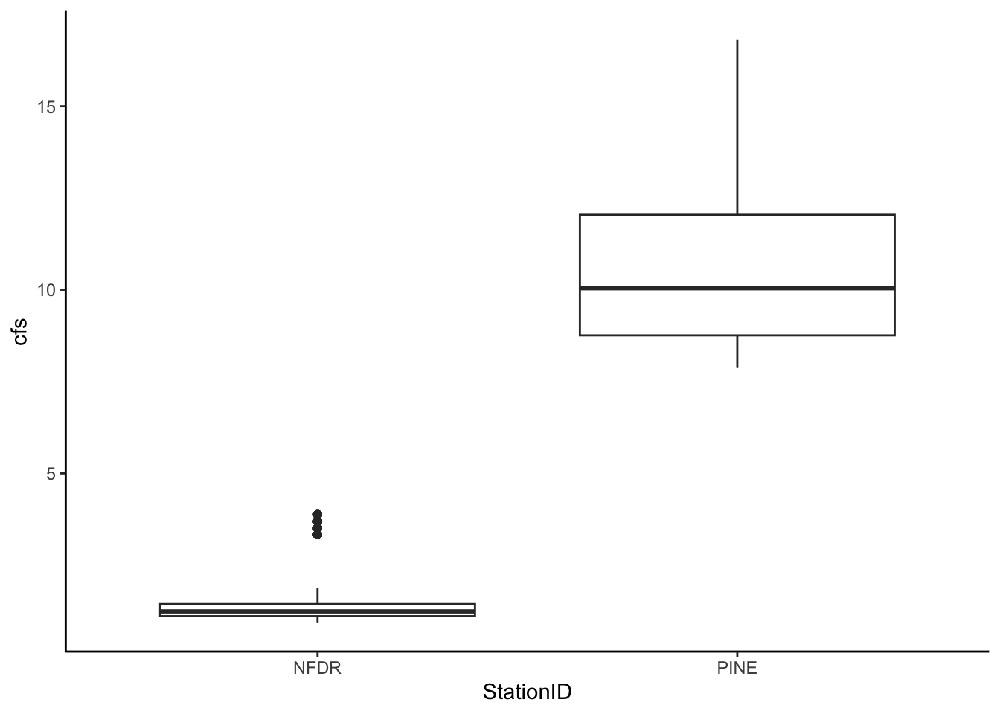
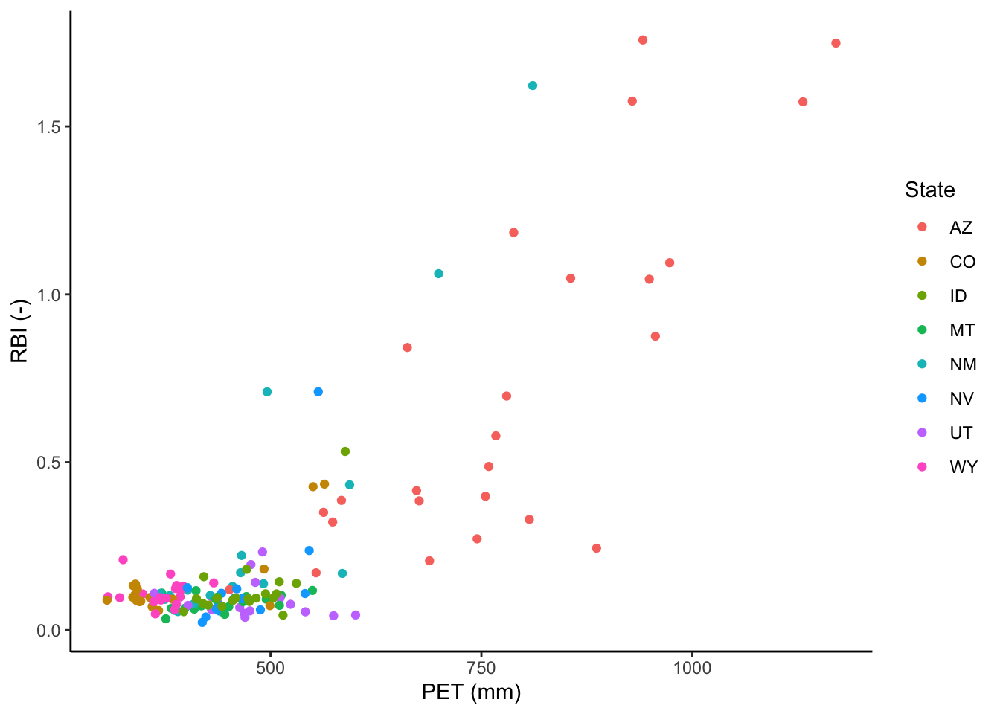
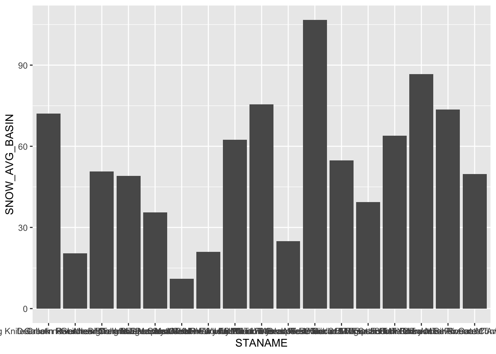

Chapter 5 Lab 1: Data vis, wrangling, and programming (45 pts)
You can find the repo for this lab here:
https://github.com/tpcovino/lab_1
As we have done previously, go to Code, download zip and put folder on your computer. Open the project in that folder and then open the .Rmd. Remember that opening the project from that folder will set that folder as the “working directory”. Doing so means that when you read in your data, R will “look” in the right place to find it. Remember to rename the .Rmd file with your name in the file name.
5.1 Problem 1 (5 pts)
Load the tidyverse and lubridate libraries.
library(tidyverse)
library(lubridate)Read in the PINE_NFDR_Jan-Mar_2010 csv using read_csv() and call the data frame “df”
df <- read_csv("PINE_NFDR_Jan-Mar_2010.csv")Make a plot with the date on the x axis, discharge on the y axis. Show the discharge of the two watersheds as a line, coloring by watershed (StationID). Use a theme to remove the grey background. Label the axes appropriately with labels and units.
df %>%
ggplot(aes(x = datetime, y = cfs, color = StationID)) +
geom_line() +
theme_linedraw(base_size = 16) +
labs(x = "Date", y = "Q (cfs)", color = "Gauging station") +
theme(legend.position = c(0.8, 0.9)) 
5.2 Problem 2 (10 pts)
Make a boxplot to compare the discharge of Pine to NFDR for February 2010.
Hint: use the pipe operator and the filter() function.
df %>%
filter(month == 2) %>%
ggplot(aes(x = StationID, y = cfs)) +
geom_boxplot()
5.3 Problem 3 (10 pts)
Read in the flashy_dat_all file and name this “df_flash”.
df_flash <- read_csv("flashy_dat_all.csv")From df_flash create a new df called “flashy_west” that includes: MT, ID, WY, UT, CO, NV, AZ, and NM
west_states <- c("MT", "ID", "WY", "UT", "CO", "NV", "AZ", "NM")
flashy_west <- df_flash %>%
filter(STATE %in% west_states) %>%
arrange(STATE)For all sites in flashy_west: Plot PET (Potential Evapotranspiration) on the X axis and RBI (flashiness index) on the Y axis. Color the points based on what state they are in. Use a theme to remove the grey background. Label the axes appropriately with labels and units. Bonus: can you make this plot without first creating a new df?
df_flash %>%
filter(STATE %in% west_states) %>%
ggplot(aes(x = PET, y = RBI, color = STATE)) +
geom_point(size = 2) +
theme_linedraw(base_size = 16) +
labs(x = "PET (mm)", y = "RBI (-)", color = "State")
5.4 Problem 4 (10 pts)
We want to look at the amount of snow for each site in the flashy_west df. Problem is, we are only given the average amount of total precip (PPTAVG_BASIN) and the percentage of snow (SNOW_PCT_PRECIP).
Create a new column in the df called SNOW_AVG_BASIN and make it equal to the average total precip times the percentage of snow (careful with the percentage number).
flashy_west <- flashy_west %>%
mutate(SNOW_AVG_BASIN = PPTAVG_BASIN * (SNOW_PCT_PRECIP/100))Make a barplot showing the amount of snow for each site in MT. Put station name on the x axis and snow amount on the y. You have to add something to geom_bar() to use it for a 2 variable plot… check out the ggplot cheatsheet or do a quick internet search.
flashy_west %>%
filter(STATE == "MT") %>%
ggplot(aes(x = STANAME, y = SNOW_AVG_BASIN)) +
geom_bar(stat = "identity")
The x axis of the resulting plot looks terrible! Can you figure out how to rotate the X axis labels so we can read them? Once you do clean up the figure by removing the grey background and
flashy_west %>%
filter(STATE == "MT") %>%
ggplot(aes(x = STANAME, y = SNOW_AVG_BASIN)) +
geom_bar(stat = "identity") +
theme_linedraw() +
theme(axis.text.x = element_text(angle = 90, vjust = 0.5, hjust=1)) +
labs(x = "", y = "Average snowfall (mm)") 5.5 Problem 5 (5 pts)
Create a new tibble called “new_tib” that contains the min, max, and mean PET for each state in flashy_west. Sort the tibble by mean PET from high to low. Give your columns meaningful names within the summarize function or using rename().
Be sure your code outputs the tibble.
new_tib <- flashy_west %>%
select(STATE, PET) %>%
group_by(STATE) %>%
summarize(min_pet = min(PET), max_pet = max(PET), mean_pet = mean(PET)) %>%
arrange(-mean_pet)
print(new_tib)## # A tibble: 8 × 4
## STATE min_pet max_pet mean_pet
## <chr> <dbl> <dbl> <dbl>
## 1 AZ 451. 1170. 785.
## 2 NM 370. 811. 483.
## 3 UT 362. 601. 481.
## 4 ID 397. 588. 471.
## 5 NV 402. 557. 464.
## 6 MT 371. 550. 444.
## 7 CO 306. 564 387.
## 8 WY 307. 433. 375.Make a barplot of the max PET for each state and provide a potential explanation for the observed pattern. Meaning what climate component do you think is driving this pattern? Next, use your understanding of watershed hydrology to discuss in which location you would expect PET and AET to be most DIFFERENT.
new_tib %>%
ggplot(aes(x = STATE, y = max_pet)) +
geom_bar(stat = "identity") +
theme_linedraw() +
theme(axis.text.x = element_text(angle = 90, vjust = 0.5, hjust=1)) +
labs(x = "", y = "Maximum PET (mm)") 
5.6 Problem 6 (5 pts)
Take the tibble from problem 5 and create a new df called “new_tib_thin” by first creating a new column that is the Range of the PET (max PET - min PET). Then get rid of the max PET and min PET columns so the tibble just has columns for State, mean PET, and PET range.
Be sure your code outputs the tibble.
new_tib_thin <- new_tib %>%
mutate(range_pet = max_pet - min_pet) %>%
select(STATE, mean_pet, range_pet)
print(new_tib_thin)## # A tibble: 8 × 3
## STATE mean_pet range_pet
## <chr> <dbl> <dbl>
## 1 AZ 785. 719.
## 2 NM 483. 441.
## 3 UT 481. 239.
## 4 ID 471. 191.
## 5 NV 464. 155.
## 6 MT 444. 179.
## 7 CO 387. 258.
## 8 WY 375. 125.Bonus: Save new_tib_thin as .csv files to your folder for this lab using the write_csv function. To get help on this function type “?write_csv” into the console.
write_csv(new_tib, "new_tib.csv")